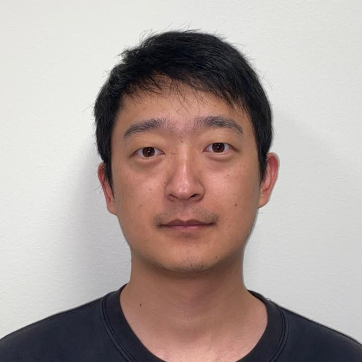

Hello there! I'm Tianjia Huang, a dedicated fourth-year Ph.D. student specializing in Petroleum Engineering at Texas A&M University (Advisor: Prof. George Moridis and Prof. Thomas Blasingame).
An overview of my research
My research focuses on numerical simulation of subsurface energy, such as geothermal, hydrogen storage, CCS, nuclear waste disposal, and particle transport in porous media. I am also developing high-performance reservoir simulator (inclduing MPI, OpenMP, and CUDA) and parallel performance analysis (using TAU performance system)
Fortran and Matlab are two programming languages I am most familiar with. I currently mainly use (modify and develop) TOUGH software, which is developed in Lawrence Berkeley National Laboratory, inclduing TOUGH+RealGasBrine (Parallelized by Dr. Moridis and me), TOUGH2, TOUGH+Particle Transport (Developed and parallelized independently by me, more than 10,000 lines of code), TOUGH+Hydrate, and TOUGH+FLAC3D.
Education
- Ph.D. Candidate: Petroleum Engineering at Texas A&M University, Expected 2024
- M.E: Mechanical Engineering at Chinese Academy of Sciences, 2020
- Non-Degree Coursework: Mechanical Engineering at Universtiy of Science and Technology of China, 2018
- B.E: Building Environmental and Energy Application Engineering at Xian Jiaotong University, 2017
Work Experience
- Graduate Research Assistant at Texas A&M University, USA, 08/2021-Present
- Ingenuity Internship at Lawrence Berkeley National Laboratory, USA, 06/2023-08/2023
- Visiting Student at King Abdullah Universtiy of Science&Technology, KSA, 06/2022-08/2022
- Research Assistant at Peking Univisty, China, 09/2020-06/2021
- Research Assistant at Guangzhou Institute of Energy Conversion, China, 08/2018-05/2020